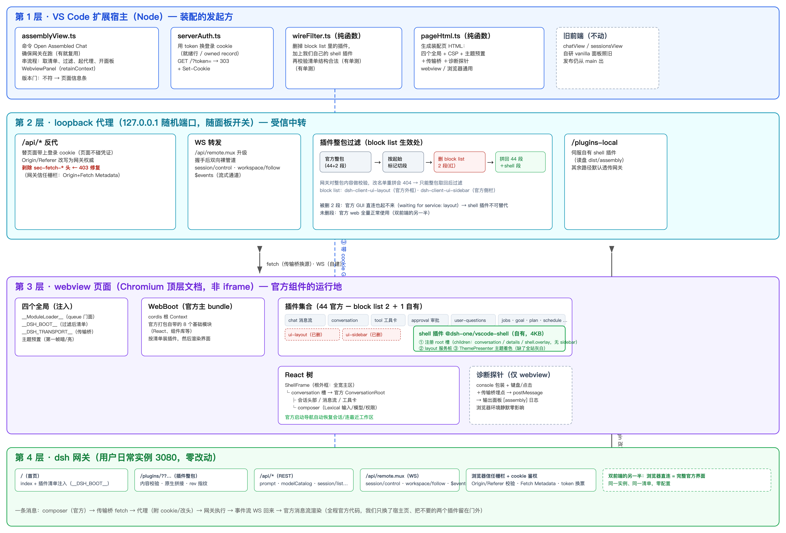

你在命令面板点「打开装配对话区」之后，这一层做四件事：确保网关已经在跑；用 token 换来登录 cookie；向网关要一份官方插件清单，把不要的两个插件从清单里划掉、把我们自己的 shell 插件加进去；最后生成本地转发服务器（loopback 代理）和面板页面，把页面塞进 webview。
| 文件 | 它负责什么 |
|---|---|
src/ui/assemblyView.ts | 命令入口和面板生命周期：什么时候开、什么时候关、关的时候把本地服务器一并收掉 |
src/server/serverAuth.ts | 登录凭证：dsh 每次启动会发一个一次性 token，拿它去网关换成 cookie，后续请求都靠这个 cookie 证明身份 |
src/ui/assembly/wireFilter.ts | 清单过滤：一份纯函数，输入官方清单，输出「删了两个插件、加了 shell 插件」的新清单，带单测 |
src/ui/assembly/pageHtml.ts | 生成装配页的 HTML：官方约定的四个全局对象、安全策略、传输桥、诊断探针都在这里面注入 |
webview 里的页面不能直接连网关：登录 cookie 带不过去，网关还会检查请求来源（只有它认的来源才放行）。所以在 127.0.0.1 上起一个只存在于你电脑里的转发服务器：页面的所有请求先发给它，由它代为附上 cookie、把请求来源改写成网关认可的写法，再转给网关；响应原路返回。面板关掉，它就消失。
| 它干的事 | 为什么要这么做 |
|---|---|
转发普通接口请求（/api/*） | 附带登录 cookie；把请求来源（Origin）改写成网关自己；剥掉浏览器自动加的来源声明头（sec-fetch-*）——少了任何一步都会被网关当成可疑请求拒绝（403），这是我们踩过坑后修好的 |
| 转发实时数据流（WebSocket） | 聊天过程中的流式输出、后台任务状态都走这条管道，转发时保持双向原样 |
| 过滤插件整包 | 网关把全部插件代码打包成一个大文件下发，还校验文件内容（改名单重新申请会直接 404）。所以我们的做法是：整包原样取回来，按每个插件代码段开头的标记切成一段一段，把 block list 里那两个插件的段删掉，剩下的拼好再给页面——网关完全不知道这回事 |
| 伺服我们自己的 shell 插件 | 它是 dsh-one 自己的代码，不从网关拿，直接读扩展目录下的文件 |
这一层几乎全是官方代码在跑。页面加载时，官方主程序（WebBoot）按照清单把插件一个个装起来、建好组件运行环境（cordis 插件树）、最后把界面渲染到页面上。我们唯一的作品是 shell 插件（约 4KB），它做三件官方外框才会做的事：
页面上还有一颗「诊断探针」（只在 VS Code 环境里激活）：它把控制台的报错、键盘点击事件、网络桥的动向转发到 VS Code 的输出面板，方便排查「只在 VS Code 里才出现」的问题。在普通浏览器里它完全不启动。
它照常提供四样东西：首页（里面带着官方插件清单）、插件整包、普通接口、实时数据流（WebSocket）。浏览器直接打开它，看到的就是完整的官方界面——这就是「双前端」的另一半。
整条链路上渲染消息的全是官方代码——我们只是给它换了一个住处的骨架，并把两个不需要的插件留在了门外。
| 验证 | 怎么做 | 管什么用 |
|---|---|---|
| 浏览器验证 | 用 Playwright 开普通浏览器加载同一个装配页，自动跑断言 | 快、自动化，是第一道关：界面渲染对不对、有没有报错、侧栏是不是真的没了、能不能输入发送 |
| VS Code 验证 | 起隔离的 VS Code 窗口真实加载扩展，人在窗口里操作 | 最终准绳。webview 里才有的一些差异（跨来源请求、安全策略执行、焦点行为）只有这里能验 |
| 文件 | 在哪一层 | 一句话说明 |
|---|---|---|
src/ui/assemblyView.ts | 宿主 | 命令入口、面板开关、取清单和过滤的编排 |
src/ui/assembly/pageHtml.ts | 宿主（生成页面） | 装配页的 HTML：四个全局、安全策略、传输桥、探针 |
src/ui/assembly/wireFilter.ts | 宿主 | 清单过滤，纯函数，有单测 |
src/ui/assembly/probe.ts | 页面 | 诊断探针，只在 VS Code 环境激活 |
src/ui/assembly/shell/shellPlugin.ts | 页面（我们的插件） | 骨架（根外框）、layout 服务替代品、主题着色 |
src/server/assemblyMirror.ts | 代理 | 本地转发服务器：接口转发、数据流转发、插件整包过滤、伺服 shell 插件 |
src/server/serverAuth.ts | 宿主 | token 换登录 cookie |
dist/assembly/plugins/@dsh-one/vscode-shell/ | 构建产物 | shell 插件打包后的样子（约 4KB） |
| 我们选了什么 | 为什么 | 当初没选什么、为什么放弃 |
|---|---|---|
| 插件清单用减法：只列「不要什么」（block list，目前就两条） | dsh 以后升级、加新插件，我们这边自动跟上，不用每次手动维护清单 | 静态白名单（提前挑好要哪些）：dsh 一更新我们就滞后，还得维护二十来个精确版本号；npm 上的版本号和 dsh 自带的也对不齐 |
| 在转发服务器上过滤插件整包（整包取回、删掉不要的两段、拼好再给页面） | 实测发现网关校验整包内容：请求里改插件名单会直接被拒（404），所以只能整包拿回来再删段 | 改名单重新申请整包：404；给 dsh 配一个禁用这两个插件的专属配置：会导致同一个网关上官方界面也打不开，违背「官方界面照常能用」的前提（这是你拍板否掉的） |
| 自己写一个小插件（shell 插件）顶替官方外框 | 官方这套组件本来就支持换骨架；实测把官方外框拿掉后，聊天组件会因为缺一个服务直接报错起不来——所以必须有人顶上，而 VS Code 里能用的骨架只有我们自己写 | 用官方外框但把侧栏藏起来（#60 的老做法）：藏的办法是一堆取巧的补丁，官方界面一更新补丁就可能失效，已废弃 |
| 由转发服务器剥掉浏览器自动加的来源声明头（sec-fetch-*） | 网关会检查来源，而浏览器替我们声明的来源（「我来自另一个网站」）会被网关当成不可信请求直接拒绝。转发服务器是受网关信任的自己人，由它转发时把这些声明去掉就对了 | 在页面代码里改请求头：浏览器出于安全禁止修改这类头；放宽页面安全策略：治标不治本 |
| 官方前端代码一律现场从网关取，不打包进扩展 | 版本永远和正在跑的 dsh 一致；扩展安装包几乎不增大（净增约 4KB） | 把官方前端代码打包进 dsh-one：安装包多 7MB，版本一旦错位就会出怪问题，每次 dsh 升级还得跟着发新版 |
| 传输用「双通道」：普通请求和数据流分开处理，都指向转发服务器 | webview 的页面来源（vscode-webview://）下，官方客户端按默认方式连网关会失败；我们接管这两条线，统一指向转发服务器 | 让页面和转发服务器同源（浏览器验证时的形态）：webview 里做不到 |